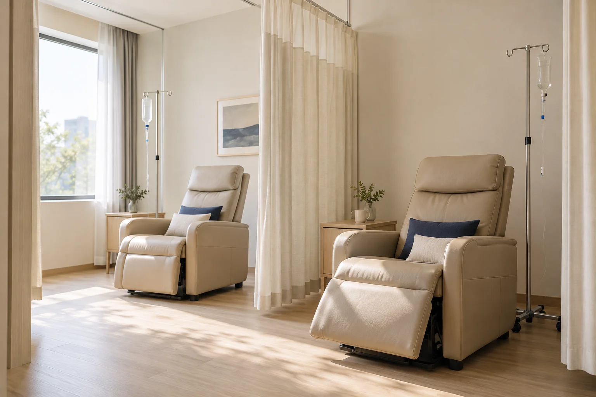

스테로이드 제로, 걱정까지 덜어낸 치료
"내 가족에게도 권할 수 있는 치료만 하겠습니다."
스테로이드에 의존하지 않고, 몸에 꼭 필요한 치료를 세심하게 고민합니다.
지금의 통증만 잠시 덜어내기보다, 치료 이후의 몸까지 생각합니다.
증상이 아닌, 원인 중심 치료
“불꽃이 아니라 불씨를 끕니다.”
증상에만 초점을 맞추지 않고, 왜 아픈지를 끝까지 살핍니다.
검사에 보이는 구조만이 아니라, 통증의 양상과 진찰에서 얻은 단서까지 함께 살펴 치료합니다.
몸이 보내는 신호, 자율신경까지 살피다.
“원인을 알기 어려운 증상, 교감신경까지 살핍니다.”
만성 피로, 불면, 소화불량처럼 검사만으로 설명하기 어려운 증상이 반복된다면 교감신경의 과흥분도 함께 살펴봅니다.
몸은 때로 쉽게 설명하기 어려운 신호를 보냅니다. 작은 변화도 지나치지 않고 세심하게 살피며, 자율신경의 상태까지 함께 들여다봅니다.
환자의 언어로 전하는 설명
“쉬운 설명이 신뢰를 엽니다.”
어려운 의학용어를 그대로 나열하기보다
환자분이 이해하기 쉬운 말로 풀어 설명합니다.
내 몸의 상태와 치료가 필요한 이유를 충분히 이해한 뒤,
안심하고 치료를 이어갈 수 있도록 돕습니다.
의사와 치료사, 하나의 팀
“같은 방향을 바라보며 돌봅니다.”
의사와 치료사는 따로 움직이지 않습니다.
진료실에서 나눈 이야기와 치료의 방향이 치료실까지 그대로 이어집니다.

온전히 나를 위한 회복의 공간
“치료를 넘어 쉼이 되는 시간”
바쁜 일상 속 치료를 받는 순간만큼은 주변의 방해 없이
온전히 나에게 집중할 수 있도록 준비했습니다.
몸의 회복과 함께 편안한 쉼까지 누릴 수 있는 공간입니다.
일상과 더 가까운 병원
“일하는 곳에도, 살아가는 곳에도 가까이”
오피스와 주거가 함께하는 여의도에서,
일터와 주거 생활권 모두에 가까운 자리에 있습니다.
출퇴근길에도, 일상 속에서도 부담 없이
찾을 수 있는 ‘우리 동네’ 병원이 되고자 합니다.
치료의 마침표를 그리는 계획
“머물게 하는 병원이 아니라, 보내드리는 병원입니다.”
당장의 통증만 잠재우는 데 그치지 않고,
회복의 단계를 따라 필요한 치료를 계획합니다.
온전한 일상으로 돌아가는 그날까지 함께합니다.